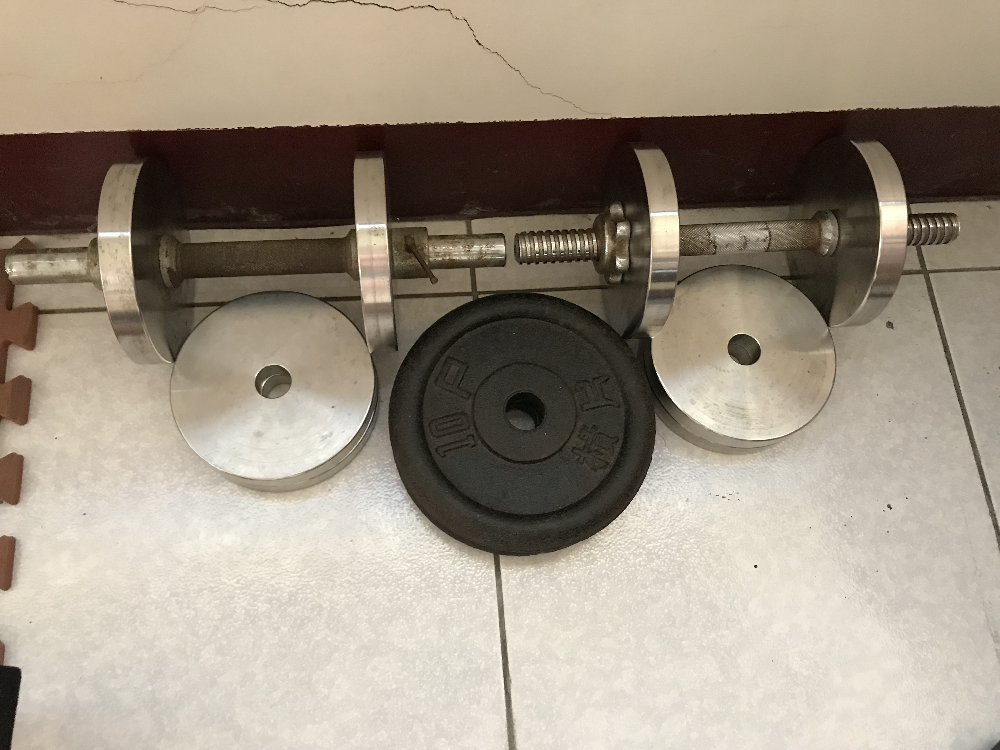
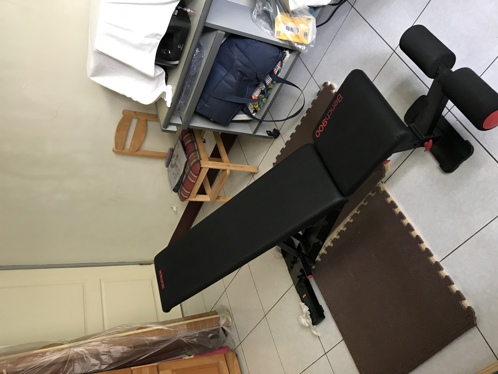
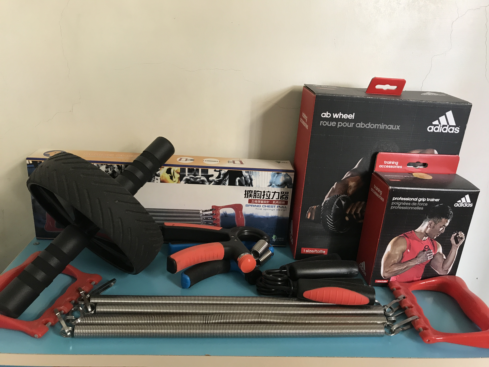

站主興趣
我平時喜歡
- 看小說:
- 平時會利用手機上安裝的app "7貓小說" 來看網路小說，目前陷入 "末世神魔錄" 中無法自拔
- 玩線上遊戲:
- 手機和電腦的線上遊戲都有涉略，手機最愛玩的是"codm"它是一款硬核的5V5射擊類競技遊戲，而電腦"Apex"是一款節奏緊湊的吃雞類遊戲
codm (圖片引自網路)
 apex (圖片引自網路)
apex (圖片引自網路)
- 健身:
- 自己買一些健身器材在家健身 例如:臥推椅、啞鈴、單槓等等，並自己上網做功課規劃自己的飲食及健身表

啞鈴

臥推椅

滾輪、擴胸拉力器、握力器
點此回主頁
Copyright © 33B017119's版權所有.